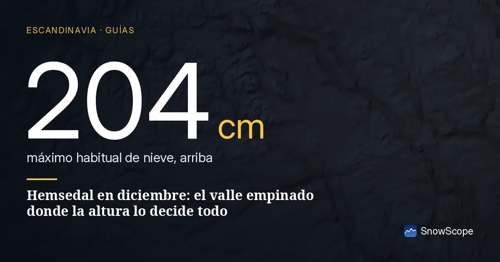

Hemsedal en diciembre: el valle empinado donde la altura lo decide todo
Hemsedal es una estación construida en terreno escarpado. En diciembre, dónde esquíes importa mucho más que cuándo. Un 15 de diciembre típico ofrece 32 cm en la base de 640 m, 70 cm a media montaña (1039 m) y 106 cm en la cima (1439 m). Esa diferencia de desnivel marca todo el mes.
Consulta la previsión de nieve en tiempo real de Hemsedal en la app SnowScopeEspesor de nieve, alertas de nieve polvo y mapa 3D, gratis.
Tres zonas, tres diciembres
Con 800 m de desnivel, 48 km de pistas y 22 remontes, Hemsedal sube bruscamente del valle a la cresta. La base es la incógnita: solo el 57 % de nuestros 46 inviernos tuvieron 30 cm allí en la semana del 15–21 de diciembre, y en 3 de esos 46 inviernos el terreno estaba pelado el 15 de diciembre.
Media montaña invierte las probabilidades. A 1039 m, el 98 % de los inviernos alcanzaron 30 cm a mediados de diciembre, e incluso un año flojo (1 de cada 10) tenía 48 cm el 15 de diciembre. En la cima, cada invierno en nuestros registros tuvo 30 cm o más en cada semana de diciembre.


Cuándo visitar cada altitud
Si tu plan es media montaña a cima, casi cualquier semana de diciembre funciona. El primer día habitual con 30 cm a media montaña es el 4 de noviembre, así que tienes una larga ventana. La semana de Navidad es mejor para profundidad: el 85 % de los inviernos tuvieron 60 cm o más a media montaña entonces.
En la base, la paciencia se recompensa. La primera semana de diciembre alcanza 30 cm solo en el 46 % de los inviernos. Espera hasta la semana de Navidad, cuando el 65 % de los inviernos tienen 30 cm o más. Esta es una estación para los que esquían hacia arriba, no hacia el pueblo.
Las pistas altas mantienen su nivel
La historia de Hemsedal a lo largo del tiempo es de divergencia. Media montaña promedió 75 cm en diciembre durante los primeros 15 inviernos (1980–81 a 1994–95), y 66 cm en los últimos 15 (2011–12 a 2025–26). Cada semana de Navidad de los últimos 15 inviernos seguía teniendo 30 cm allí.
La base cuenta una historia más difícil: bajó de 45 cm de media a 23 cm. El invierno pasado (2025–26) logró 61 cm a media montaña el 15 de diciembre pero solo 27 cm en la base en la misma fecha.
Precios de remontes y momento
Hemsedal usa precios dinámicos para los pases diarios, con precios fijados por fecha en la tienda en línea oficial del operador. El 13 de noviembre de 2026, no se había publicado un precio fijo, así que no podemos citar uno. El patrón es familiar: compra en línea, compra pronto, y evita la ventana festiva de Navidad si el coste es tu preocupación.
Los días cortos de diciembre significan que madrugar importa. Planifica tus mejores pistas antes de comer, y baja en remonte desde media montaña si la base se ve floja.
Hemsedal versus Geilo
Geilo está en la meseta alta al sur de aquí, más baja y más suave. Su base (779 m) tuvo 30 cm en la semana del 15–21 de diciembre en el 80 % de los inviernos—mejor que la base de Hemsedal—pero su cima a 1163 m es aún más baja, con solo 68 cm en un 15 de diciembre típico. El pase diario de Geilo comienza en NOK 590 (aproximadamente EUR 56 al tipo de cambio de referencia del 12 de noviembre).
Elige según lo que esquíes: Hemsedal por terreno escarpado y profundidad fiable en altitud, Geilo por pistas más fáciles y nieve más baja.
Seguridad en las pistas altas
Si te aventuras fuera de pista después de nieve fresca, consulta el aviso de aludes noruego en varsom.no antes de ir. Las pistas altas retienen bien la nieve, pero esa misma estabilidad puede ocultar peligros al principio de la temporada.
Consejos para esquiadores
- Esquía media montaña y arriba a principios de diciembre. Vuelve a la base solo después de mediados de mes o tras nevada fresca.
- Compra tu pase de remonte en línea lo antes posible; los precios dinámicos recompensan a los que compran pronto.
- Comienza cada día en el primer remonte para maximizar luz diurna en el terreno alto.
- Esquiadores fuera de pista: consulta el boletín de aludes de Varsom (varsom.no) antes de abandonar la pista.
- Prepárate para tres condiciones diferentes: nieve fina en la base, media a media montaña, y manto profundo en la cima.
Sobre estas cifras
Los espesores de nieve de las estaciones son la nieve más profunda en las pistas altas en la fecha indicada; son estimaciones para una zona, no una medida en un punto. Las previsiones pueden cambiar. Consulta siempre el boletín oficial de aludes antes de salir fuera de pista.
Boletines oficiales de aludes: Varsom (NVE)
Citar este informe
Para investigación, docencia o prensa: cifras y gráficos reutilizables libremente bajo CC BY 4.0 con esta cita.
SnowScope (2026), Hemsedal en diciembre: el valle empinado donde la altura lo decide todo, https://snowscope.app/blog/es/2026/11/hemsedal-december-skiing-snow-depth-price.html, consultado el 2026-11-14
SnowScope (Atlas Labs). (2026, November 14). Hemsedal en diciembre: el valle empinado donde la altura lo decide todo. SnowScope snow reports. https://snowscope.app/blog/es/2026/11/hemsedal-december-skiing-snow-depth-price.html
BibTeX
@misc{snowscope2026hemsedaldecemberskiingsn,
author = {{SnowScope (Atlas Labs)}},
title = {Hemsedal en diciembre: el valle empinado donde la altura lo decide todo},
year = {2026},
month = nov,
howpublished = {\url{https://snowscope.app/blog/es/2026/11/hemsedal-december-skiing-snow-depth-price.html}},
note = {Published 2026-11-14 13:29 UTC; accessed 2026-11-14}
}· CC BY 4.0 · Métodos, datos y herramientas →
Hemsedal: nieve y temperatura según la altura, este invierno vs el pasado (herramientas) →
Sigue Hemsedal
Gratis: un aviso cuando llega la nieve y la previsión cada mañana.